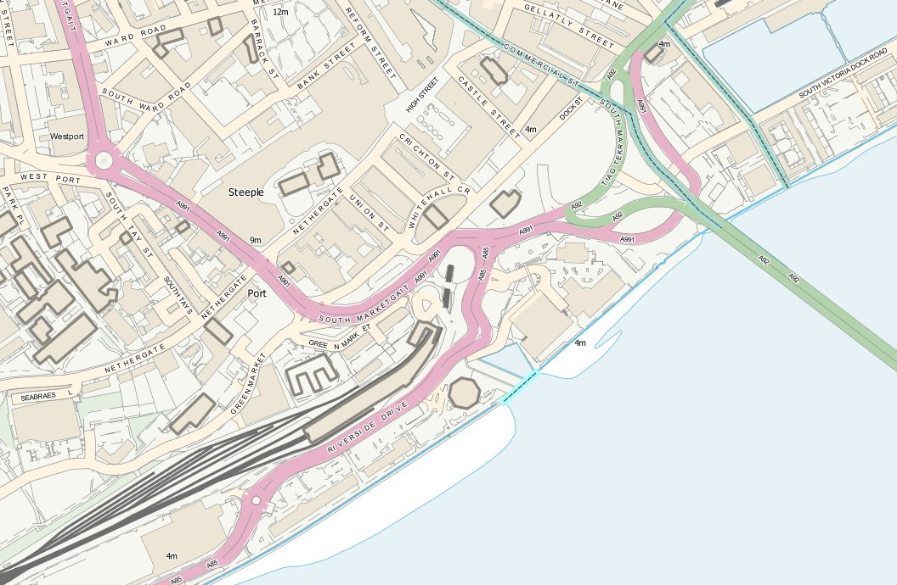
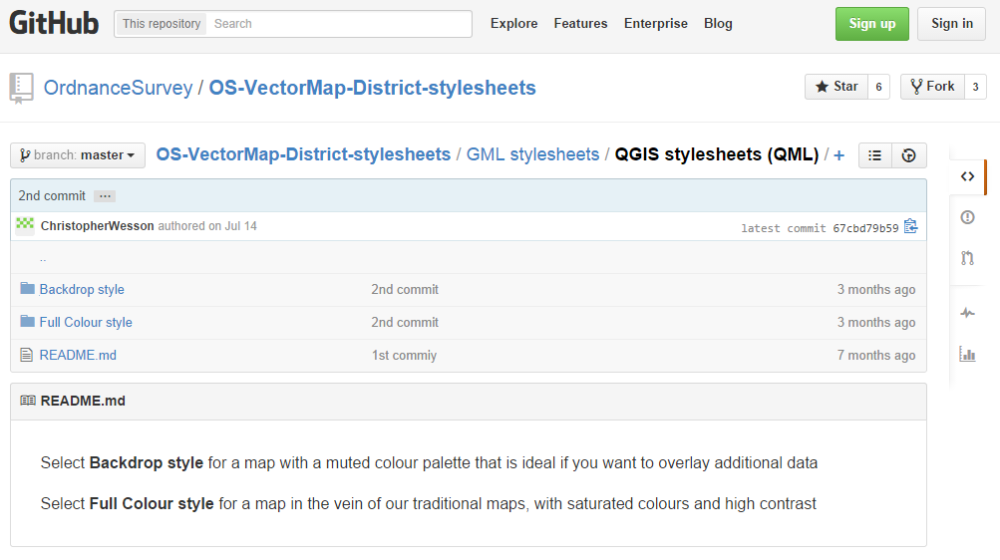
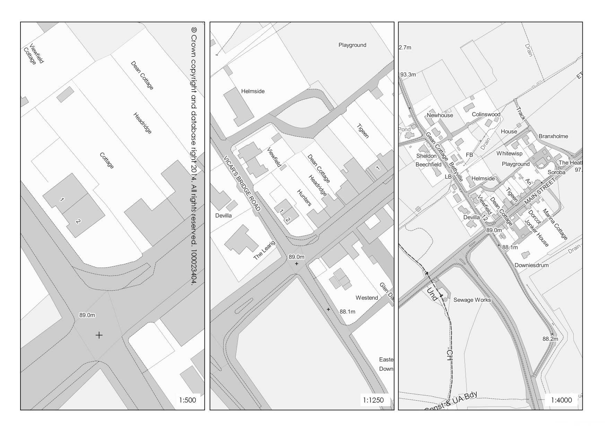
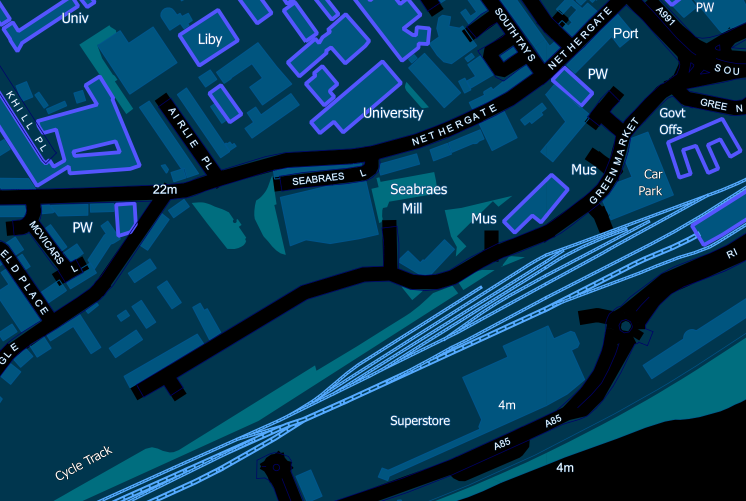
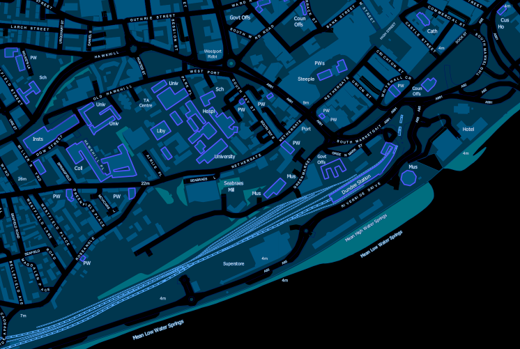
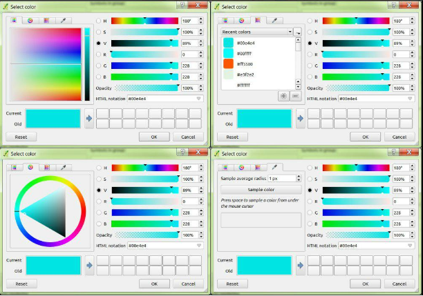
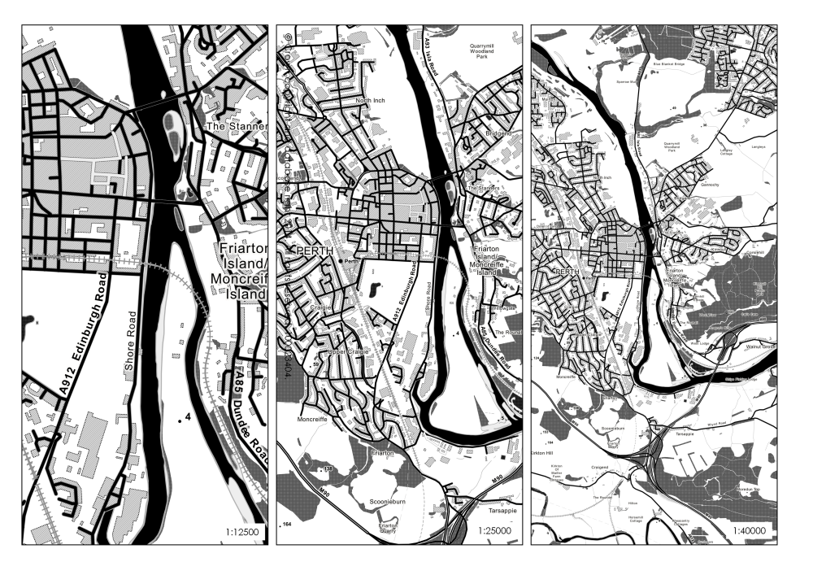

credit: shoulders, giants, standing, etc.
Aforesaid giants
- @charley_glynn
- @chriswesson_uk
- @PetersonGIS
- @stevefaeembra
- @undertheraedar
- @nordpil
- @underdarkGIS
- @dragons8mycat
- @vtcraghead (http://bit.ly/1wriwSp)
- Check QGIS flickr group
- https://www.flickr.com/groups/qgis/pool/
- Check OS carto design team pages
- www.ordnancesurvey.co.uk/resources/carto-design/
The data
Available under OSMA / PSMA
Strategi, Meridian2, VMD, VML, OSMM

Ground Zero
github.com/ordnancesurvey

Design Principles
- user requirements
- display format
- visual hierarchy
- simplicity
- legibility
- consistency
- accessibility
- composition
user (my) requirements
- choice - raster or vector
- choice - full colour or backdrop
- choice - smooth transitions or fixed scales

display format
- web mapping base
- high quality print composer output

visual hierarchy
- colours and contrast
- feature highlights
- consistency

How we got there
- Strip out the backdrop colour codes
- Convert to greyscale RGB
- R x 0.2126 + G x 0.7152 + B x 0.0722 = Y
- The new colour is RGB(Y,Y,Y)
- Preserves luminosity and visual hierarchy
- Optionally convert RGB to HEX
- hex.colorrrs.com
Caveats
- QML work with my data schema
- Depends on how you load it
- GoLoader
- shp2pgsql
- FME
- Creates lots of files
Styles saved into PostGIS database for QGIS
To do: convert to SLD for Geoserver
Christmas come early

coming in 2.6 at the end of the week
Changelog
Thanks!

@mixedbredie & https://github.com/mixedbredie/QGIS-styles
Bespoke vector terrain
- ascii to DEM Tiffs
- DEM Tiffs to Aspect
- Reclassify aspect (360/8)
- Polygonise sectors 2 through 5
- Generalise and smooth polygons
- Colour up in greys
- Create SLD and layer group with contours
- One terrain base map
/